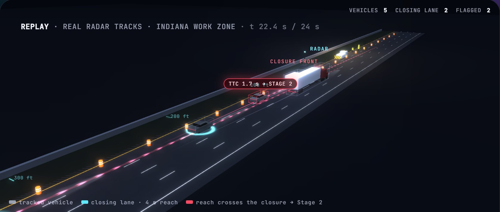
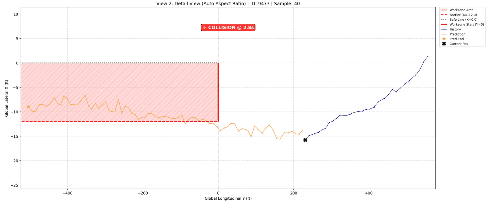
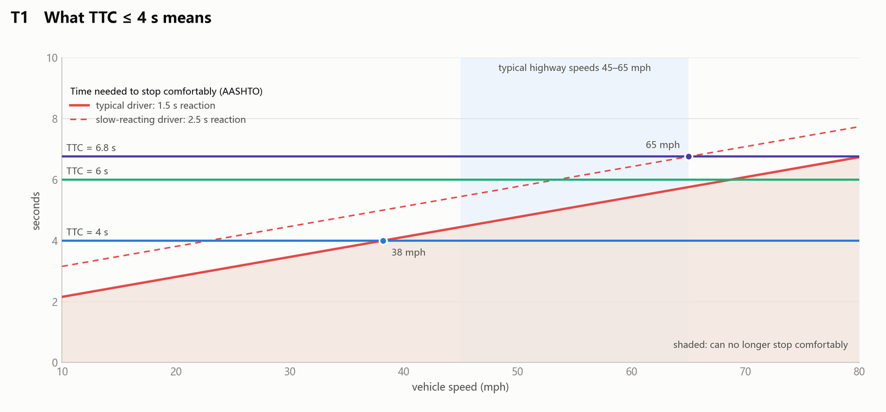
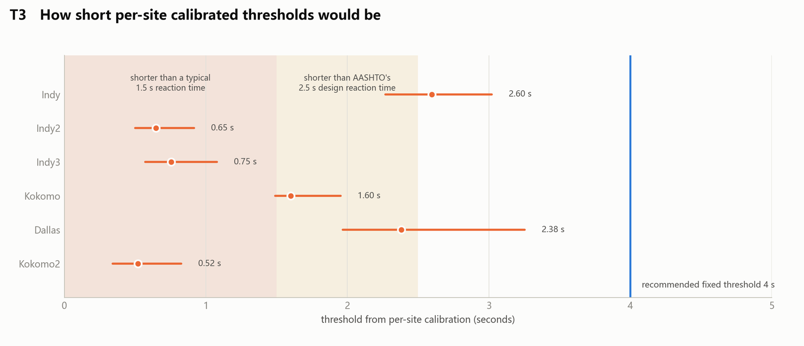

Work Zone Risk Prediction
A roadside system that watches traffic approaching a highway lane closure and predicts, a few seconds ahead, which vehicles are about to cut into the work zone — in real time, on an edge computer next to the road.
My role: I designed and built the two-stage risk-prediction system and its real-time runtime. Lane estimation and camera–radar fusion come from teammates.

Late mergers are the danger at a lane closure
A highway work zone closes one or more lanes and puts crews on foot a few feet from live traffic. Most drivers merge out of the closed lane early. The ones who don't — who stay in the closing lane at speed, or swerve back into it — are the ones who end up inside the closure.
Roadside sensors can see those vehicles coming. The hard part is deciding, a few seconds ahead and at highway speed, which of thousands of passing vehicles is actually a threat, without raising so many alarms that drivers and workers stop listening.
Sense, screen, predict
From the digital twin, warnings travel to drivers over C-V2X — that part is its own project: Connected Vehicles →
A cheap, explainable screen
Every tracked vehicle in the closing lane gets a time-to-collision with the closure front, from its distance, speed and acceleration. Only vehicles under the threshold go on to Stage 2, so the expensive model runs on a small fraction of traffic.
Trucks that weave across lanes near the closure (two or more lane changes) are escalated directly.
Where will it be in four seconds?
A spatio-temporal attention LSTM reads the last 2 s (20 radar frames) of a vehicle's track and predicts the next 4 s (40 steps). If the predicted path crosses the closure front inside the closed lane, the vehicle is flagged high risk; otherwise medium.
A Monte Carlo variant samples many futures and warns when more than half of them end in the work zone.

From a statistical screen to a physical one
The first Stage 1 (autumn 2025) was statistical: a Gaussian copula over each vehicle's distance, speed and acceleration, flagging the tail of the joint distribution, with conjugate-prior (Normal–Inverse-Gamma) updates so a model built in Indianapolis could adapt to a new site — it converged on Dallas data within fewer than 50 samples. It worked, but a percentile is hard to explain to a traffic engineer. In June 2026 I replaced it with the time-to-collision gate: the same job, in seconds anyone can check.
Why four seconds
A driver needs about 1.5 s to react (AASHTO designs for 2.5 s) and brakes comfortably at roughly 0.35 g. With 4 s left, only a driver going about 38 mph or slower can still stop comfortably; at 65 mph it takes 6–7 s. So the gate flags exactly the vehicles that are running out of room. Calibrating a threshold per site gave values between 0.5 s and 2.6 s across six sites — all below 4 s — so one fixed threshold works everywhere.
Congestion takes care of itself: in slower traffic fewer vehicles cross the gate, so the system does not need a separate congestion mode.


Three field tests, spring 2026
The system was trained and evaluated on radar data recorded at live Indiana work zones. Prediction error is in feet over the 40-step horizon; trigger rates count cars on the work-zone lane and trucks on all lanes.
Trajectory prediction error
| Field test | ADE (ft) | FDE (ft) |
|---|---|---|
| Kokomo, Apr 22 | 11.98 | 23.94 |
| Indianapolis, Apr 29 | 6.88 | 12.61 |
| Indianapolis, May 8 | 6.04 | 10.93 |
ADE: average displacement error; FDE: error at the 40th predicted frame. Kokomo's radar reports frames less often, so its 40 steps cover a longer time (≈ 5.6 s vs 4.3 s).
Share of vehicles flagged
| Kokomo | Indy 4/29 | Indy 5/8 | |
|---|---|---|---|
| Stage 1, cars | 2.49% | 1.08% | 1.36% |
| Stage 1, trucks | 4.06% | 1.13% | 0.96% |
| Stage 2, cars | 0.27% | 0% | 0.12% |
| Stage 2, trucks | 4.06% | 1.13% | 0.96% |
Trucks that pass Stage 1 go straight to high risk, so their two rows match.
Built to run unattended on the roadside
Real time at the edge
Reads live radar and camera–radar fusion streams over UDP and runs on an on-site computer with a handful of dependencies; every vehicle is re-evaluated about once a second.
Fails safe
A state machine (boot → calibration → operation → failsafe) and a watchdog that notices when sensor data stops arriving.
A new site is a config file
Lane layout, closure position and sensor placement live in one YAML file per site; six closure layouts (flush, setback, taper, left or right) are supported.
Black-box logging
Raw packets, features and decisions are logged at three levels, so any warning can be replayed and explained after the fact.
Fast offline replay
Recorded field days replay through the full pipeline at about a million radar frames in 10–25 s, which makes threshold studies cheap.
An engineer's dashboard
A React dashboard on a FastAPI and WebSocket backend for monitoring sessions, alerts and individual vehicles.
One year, step by step
Part of a larger smart-work-zone effort
This work is part of the Integrated Smart Work Zone project with INDOT at Purdue University, which brings together roadside sensing, a work-zone digital twin, worker alerts and connected vehicles. I work on it in Prof. Yiheng Feng's CART Lab.